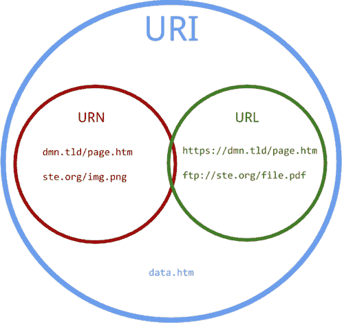
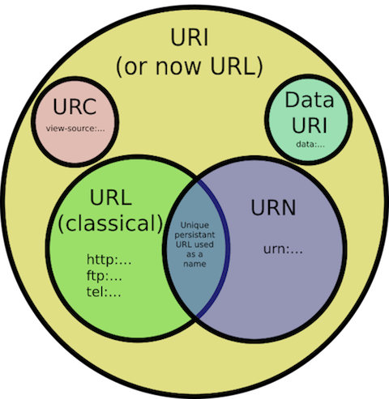
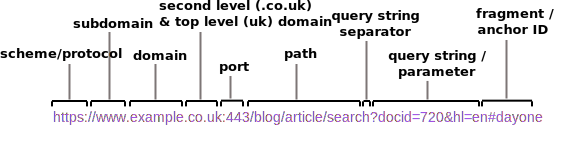

Welcome to my learning process. Today I tried learning about URLs.
1: Sizzling Intro (Overconfidence)
URLs are still a killer feature of the Web. This is what Chris Coyier wrote recently on CSS tricks.
Cool!
So, URLs have stood the test of time on the Web, providing us from the very beginning with an unmanned gateway
to information, ability to share things, and to search (where would we be today without our trusty
search engines?)
URLs seem simple. You type them in and voila. There can't be much to them, right?
2: Lots of Confusion


Wrong. I found these. What do they mean?
3: Craving Different Perspectives
I learn by researching the same topic written on by different people (btw this is why you should blog).
I found articles on URIs/URLs/URNs, e.g. here,
here and here.
I discovered lots of different, confusing terminology.
4: Listening is Learning
Desperate for some understanding, I watched two videos, here and here. I discovered simpler explanations and
handy diagrams.
5: Drawing Pretty Pictures
I want to convey simply what a URL (and URI/URN) is. This inspired me to draw!
6: URLy Like This

This pic contains all parts of a URL I could find. Below are the (non-exhaustive) 1000 words it paints:
- Scheme/protocol - Identifies a resource and tells you how to interpret the part of the URL
after the colon. Mostly http/https/ftp,
but there are lots more.
- Subdomain - The default is 'www'. Tim Berners-Lee admitted this should have been 'info'.
TBL also admitted this mistake.
- Domain - A nickname for an IP address (the string of numbers read by computers) that identifies
Web pages.
- Second-level/top-level domain - For 'example.com', example is the second-level domain and
.com is the top-level domain.
- Port - 443 is the default port for secure web servers (https). 80 is default for http. Web
servers can listen on a port specified by a user and otherwise are usually hidden.
- Path - The part of a URL that is designed.
- Query string separator - The '?' separates the query string from the other parts of the
URL.
- Query string/parameter - Set dynamically with an unstandardised structure, they commonly
contain the the content of an HTML form. In the picture are 'docid' (document identifier) and 'hl' (
host language)
with respective values of '720' and 'en'.
- Fragment/anchor ID - Refers to an internal section within a web document.
- URI - Uniform Resource Identifier. An entire set of directions for finding any sort of resource
on the Web. Has two subsets - URLs and URNs.
- URL - Uniform Resource Link. Identifies but also specifies network location of a resource. What most think of when imagining a link to a website, i.e. a Web address. Absolute URLs (i.e. including scheme) should link to external pages/images and a relative URLs
should link to internal pages/images within your own site. This helps avoid broken links when schemes or domain names change.
- URN - Uniform Resource Name. Specifies name of resource. Useful because
they are globally unique and persistent over long periods of time, even after the resource which they
identify ceases to exist or becomes unavailable.
6: Examples I Found
URN
-
urn:isbn:0451450523 - The 1968 book The Last Unicorn, identified by its book number.
- urn:lex:eu:council:directive:2010-03-09;2010-19-UE - A directive of the European Union, using the proposed
Lex URN namespace.
URL
- https://cascadingmedia.com/assets/images/insites/2015/02/url-anatomy/url-anatomy-55598c24.png
- ftp://ftp.funet.fi/pub/standards/RFC/rfc959.txt
URI
-
http://example.com/resource?foo=bar#fragment (also a URL)
- 978-0553293357 - unique identifier for a book (also a URN)
7: TL;DR
- A URI identifies a resource either by location, or a name, or both. A URI has two specializations known as
URL and URN.
- All URLs and URNs are URIs (see argument against this here)
but not all URIs are URLs and URNs.
- Read my shorter, friendlier follow-up post on URLs.
{kind=link}
{kind=link}